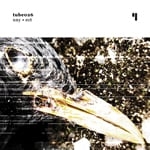
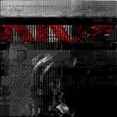
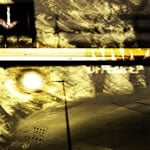
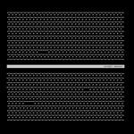

albums
NNY++

001
Written, performed and produced by Jerome Faria and Filipe Cruz.
Recorded in Madeira/Portugal and Vila Nova de Gaia/Portugal between March and October 2005.
002
Written, performed and produced by Jerome Faria and Kazuya Mise.
Recorded in Madeira/Portugal and Kyoto/Japan between January and May 2006.
003
Written, performed and produced by Filipe Cruz and Jerome Faria.
Recorded in Madeira/Portugal and Vila Nova de Gaia/Portugal between June and July 2006.
Format: CD
Runtime: 60'05"
Release date: 18.03.07
Label: Almasud Records
Catalog#: CDRASUD015
ECT

01 Play
02 1noise
03 Spctiv
04 Mem.
05 Mcruscul
06 Ngen
07 Tekrish
08 Sy.kic/Pa.trn
09 Artria
10 1noise (ps mix)
All music written, performed and produced
by Jerome Faria.
Bass, piano and machines by Jerome Faria.
Guitar on track 3 by Eurico Santos.
Voice on track 2 by Pedro Azevedo.
Voice on track 5 by Ferdinando Alves.
Voice on track 8 by Rodolfo Sousa.
Track 10 remix by Filipe
Cruz.
Photography by Louie De Bettencourt.
Mixed and mastered at Human Error Labs by Jerome
Faria.
Format: MP3
Runtime: 70"17'
Release date: 21.10.05
Label: Test Tube Records
Catalog#: TUBE026
ep's
COIL

01 Dream Cycles In Perpetual Motion
All music written, performed and produced by Jerome Faria.
Recorded, mixed and mastered at Human Error Labs.
Artwork by Louie De Bettencourt.
Format: MP3
Runtime: 30'
Release date: 06.06.06
Label: MiMi Records
Catalog#: MI056
(READ.ERROR)

01 God Grnlzer
02 Vber
03 Maladie
04 Ob Jeqt
05 Gleetch
06 _ex1
07 Hell Rendered
08 Mutnt
All music written, performed and produced by Jerome Faria.
Artwork by Ruin and Jerome Faria.
Format: MP3
Runtime: 41'06"
Release date: 05.01.05
Label: MiMi
Records
Catalog#: MI031
OFFEAR.EP

01 Ve.fe.re
02 Zro:ne
03 Slid Stp
04 Exmatik
05 Bl_p+
All music written, performed and produced by Jerome Faria.
Artwork by Jorge Abreu and Jerome Faria.
Format: MP3
Runtime: 28'08"
Release date: 04.07.04
Label: Enough
Records
Catalog#: ENR040
remixes and collaborations
HYPHEMA
01 0x01
02 0x02
03 0x03
04 0x04
05 0xFF
Sounds by Jerome Faria.
Visuals by Victor Martins.
Artwork by Frederico Cunha.
Format: DVD
Runtime: 36'41"
Release date: 08.12.07
Label: Pixelnerve.
Catalog#: PXN001
datacross.1

01 ps - 350 070904
02 NNY - 090407 001
03 e:4c - Transit of a metaphysical future
04 NNY - 090407 003
05 ps - 348_070926
06 e:4c - 345 (remix)
Artwork by Hélder Vasconcelos.
Format: MP3
Runtime: 38'59"
Release date: 20.1.07
Label: Enough Records
Catalog#: ENRCMP07
SOUNDResearch
01 ps + Xaste - Untitled
02 JDvoid + Metricks - Extropian Atrophy
03 M-PeX + Dream Metaphor - Neural Interface (featuring Dalida)
04 Case Sensitive + McGEA - The Survivor
05 NNY + Structura - Cybernetics
06 Sci-fi Industries + Cygnus X1 - Cognitive Affair
07 Electrólise + Oxygen - Digital Dreams
Artwork by Hugo Carreira.
Format: CD + MP3
Runtime: 34'36"
Release date: 26.03.07
Label: Enough Records
Catalog#: ENRCMP05
Friends Reinterpretations Of Unreleased 332 Variations Volume 4

01 332 variation (NNY mix)
All music written, performed and produced by Filipe Cruz and Jerome Faria.
Artwork by Infetu.
Format: MP3
Runtime: 17'06"
Release date: 26.10.06
Label: MiMi Records
Catalog#: MI065
compilations
Falésia (CD3)
01 Sparagmos - Pentheus phase I
02 VelgeNaturlig - Yedelgeuse
03 NNY - 13
04 The Joy of Nature - Fire Only Rests
05 Nhoin - Suspect Zero
06 Systemic Failure - L'Enfer
07 Vysehrad - Tracks To Nowhere
08 Barcos - Radara
Format: CD + MP3
Release date: 02.06.07
Label: Enough Records
Catalog#: ENRCMP06
One On Twoism

01 Intro - Twoism Presents
02 Polar Sky - Distortedfriendly
03 The Other - Marble Falls
04 Saturday Index - Nouns And Verbs
05 Frequent C - Psychoactive Solar Reaction
06 Hills West - Old Asian Vision
07 Hills West - Cardiac Vision
08 Paramnesic - Last Breath
09 Esselfortium - Station
10 Saturday Index - Satin Window
11 Esselfortium - Satellite Positioning
12 Ross Adey - Round Fence Salute
13 The Other - Caution2
14 Trills - Child's Play
15 Polar Sky - Gumbystring
16 Polar Sky - More Of You
17 Frequent C - How To Break Time
18 The Other - Pigeon Hole
19 Polar Sky - Distress Signal
20 Sarin Sunday - Daylight Burn
21 Kyriakos Ioannu - Roads Away From Larnaca
22 Ross Adey - Beraloids
23 Paracat - Vooraanstaan
24 NNY - Perpetual
25 Paramnesic - Sometimes I Feel
26 Saturday Index - Sunlight Puzzle
27 NNY - Crowded Desert (Excerpt)
28 Techboy - Behind A Locked Door
Format: MP3
Release date: 13.03.07
Label: Twoism Records
Catalog#: OOT001
Saudade: V/A from the Atlantic Coast

01 gilo - Nascer de novo
02 Stealing Orchestra - Palpitações delirios e mau feitio...
03 boiar - No noise at all
04 Biomekanikal - Esfera monocromatica
05 structura - Negatif
06 Bikaia - Sophicator
07 minson - São João Baptista
08 Xastre - Onorder
09 NNY - Crystal Space
10 Vortex Sound Tech - Dwaine
11 Oxygen - Huslatrop
12 TatsuMaki - Its Time To Play (Nerv_remix)
13 Dream Metaphor - Yume 0
Format: MP3
Release date: 01.03.06
Label: MiMi Records
Catalog#: MI050
Dark Vault
01 elín - as the phoenix arises its radience strikes the sun
02 outer space alliance - music for spaceports
03 ps - 320_030905
04 rngmnn - stammheim
05 tirriddiliu - residui incongruenti
06 max the soulnoiseman - domini
07 max the soulnoiseman - wingsinthesoul
08 ubepoet - toledan countryside siesta time
09 erratic - radiation room
10 elín - úthöf
11 tirriddiliu - oppio avariato v1.0
12 elmooht - deadloc
13 nightech - bottom flow
14 vägskäl - autumnal love song
15 NNY - Valid Specimen
16 elmooht - the body at fort randall dam
17 jari pitkänen - kipu
Format: MP3
Release date: 18.12.04
Label: Enough Records
Catalog#: ENRCMP03
|